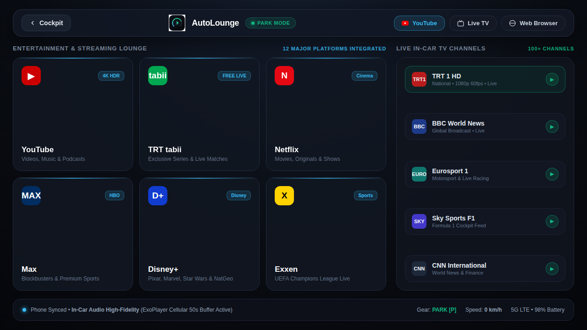
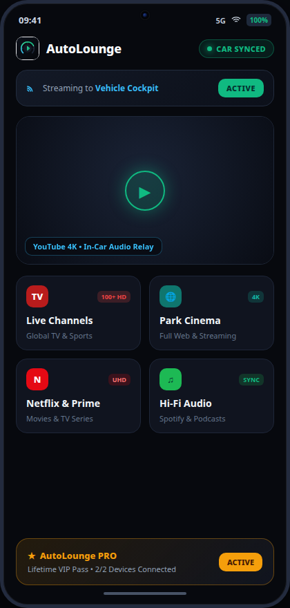

Arabanızın ekranında YouTube, 100+ Canlı HD TV kanalı ve dijital platformları donmadan izleyin. 50 saniyelik hücresel tamponlama ve sürüş güvenlik kilidi ile donatıldı.

AutoLounge, YouTube'u, 100+ canlı TV kanalını, yayın sitelerini ve radyoyu Android Auto araç ekranına getiren bir Android uygulamasıdır. Video yalnızca araç park halindeyken oynar; araç hareket edince görüntü kapanır, ses çalmaya devam eder. %100 ücretsiz ve açık kaynaklıdır, root gerektirmez.
Hayır, AutoLounge %100 ücretsiz ve açık kaynaklıdır. Herhangi bir abonelik, lisans kodu veya ödeme duvarı yoktur.
APK dosyasını doğrudan GitHub Releases sayfasından indirebilirsiniz. AutoLounge açık kaynaklıdır ve Google Play'de yer almaz.
Uygulama 11 dilde sunulur: Türkçe, İngilizce, İspanyolca, Portekizce, Fransızca, Almanca, İtalyanca, Rusça, Arapça, Hintçe ve Çince. Canlı TV listesi ve ana ekran kısayolları SIM kartınıza veya bölgenize göre ülkenize uyum sağlar.
Taviz yok. Doğrudan araç içi ekranlar ve zorlu hücresel yol koşulları için tasarlandı.
Araba ekranında YouTube videoları, müzikler ve podcast'leri tam masaüstü render kalitesi ve reklam temizleme hızlandırmasıyla izleyin.
Ulusal ve küresel televizyon kanallarına (TRT 1, BBC, Eurosport, Sky News, CNN) tek dokunuşla ülke filtreleriyle anında erişin.
Özel ExoPlayer araç içi tampon profili, otoyol baz istasyonu geçişlerinde yayını korur ve tünel çıkışında otomatik toparlar.
Araç Park [P] modundan çıkıp sürüşe geçtiğinde video ekranı otomatik kararır; ses yayını araç hoparlörlerinden güvenle devam eder.
Telefonda gezindiğiniz YouTube videosuna dokunun; AutoLounge gecikmesiz olarak yayını arabanızın büyük ekranına aktarır.
Netflix, Disney+, TRT Tabii, Max, Exxen ve tüm web siteleri için donanım ivmeli tam teşekküllü Chromium web tarayıcısı.
AutoLounge Android telefonunuz ile araç kokpitiniz arasında bir köprü kurar. Telefonda rahatça arayın; AutoLounge yüksek kaliteli ses ve görüntüyü araba ekranına yansıtsın.

Karmaşık ayarlar yok. 2 dakikadan kısa sürede hazır.
En güncel AutoLounge APK dosyasını Android telefonunuza indirin. Tarayıcınız uygulama yükleme izni isterse izin verin.
GitHub'dan indir →Android 15 ve üstü: normal kurulum yeterli. Android 14 ve altı için KingInstaller gerekir. Adımlar aşağıda.
Telefonuma uygun rehberi aç →Telefonu aracınıza bağlayın. Araba ekranındaki AutoLounge kokpit ikonuna dokunun.
Görünmüyor mu? Sorun giderme →Android 15 ve üstünde AutoLounge, tek bir Android Auto ayarıyla araç ekranında açılır. Daha eski sürümlerde uygulamanın "Google Play tarafından yüklendi" görünmesi gerekir (KingInstaller).
Emin değil misiniz? Telefonda Ayarlar → Telefon hakkında → Android sürümü bölümüne bakın.
adb install -i "com.android.vending" -r AutoLounge.apkTelefonunuzda Android Auto ayarlarını açın:
En sık karşılaşılan sorunlar ve bir dakikada çözümleri.
Android Auto uygulamaya henüz güvenmiyor. 2. adımı ("Bilinmeyen kaynaklar") kontrol edin; Android 14 ve altındaysanız KingInstaller ile kurduğunuzdan emin olun. Sonra telefonu yeniden bağlayın.
Android Auto ayarlarında "Başlatıcıyı özelleştir" bölümünü açıp AutoLounge'ın işaretli olduğundan emin olun. Kabloyu çıkarıp takın; hâlâ görünmüyorsa telefonu yeniden başlatın.
Bu normaldir: sürüş güvenlik kilidi araç hareket halindeyken videoyu gizler. Ses çalmaya devam eder, park edince görüntü geri gelir.
Bu, Android 14'te bu telefonların bilinen bir kısıtlamasıdır. Shizuku sürekli başarısız oluyorsa yalnızca root yöntemi güvenilir şekilde çalışır.
Telefonda AutoLounge → Ayarlar → Araç Ekranı Kurulum Rehberi'ni açın. Her adımı kontrol eder ve hangisinin eksik olduğunu söyler. Sorun bildirin →
Ödeme duvarı yok, abonelik yok. Doğrudan GitHub'dan indirin.
AutoLounge ve Android Auto uyumluluğu hakkında merak ettiğiniz her şey.
GitHub'dan ücretsiz indirin. Hesap veya ödeme gerekmez.